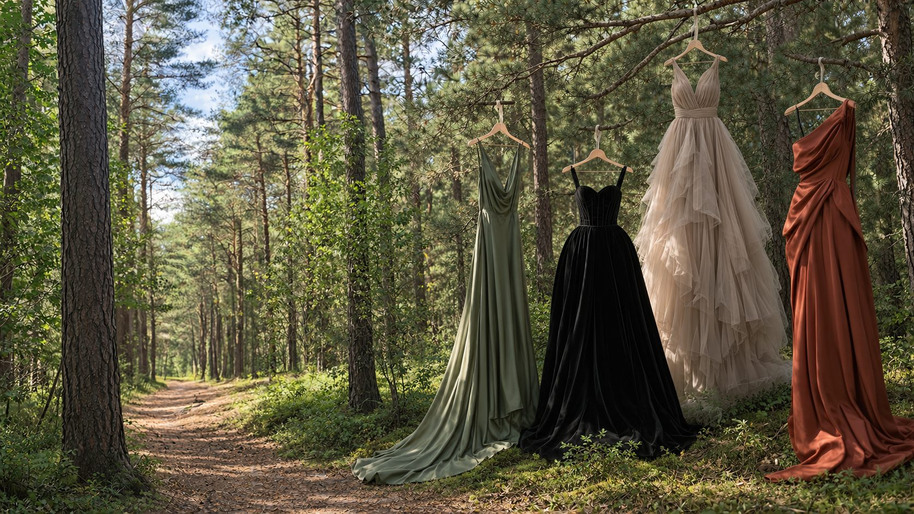
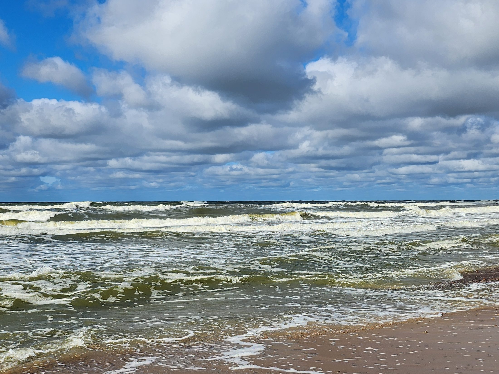

Palik pėdsaką gamtoje ir sieloje
Kiekvienas rūbas turi istoriją. Žinomi žmonės ir dizaineriai išleidžia savo drabužius į taką, o už juos surinktos lėšos virsta ramybės matavimosi takais gamtoje.
Pranešk man apie aukcionusKaip tai veikia
-
1
Drabužis
Žinomas žmogus, dizaineris ar kiekvienas, kurio spintoje laukia vardinis drabužis, išleidžia jį į taką: suknelę, kostiumą, paltą ar rankinę.
-
2
Istorija
Kartu su drabužiu keliauja jo istorija: kur jis buvo vilkėtas ir ką jis reiškė žmogui, kuris jį vilkėjo.
-
3
Nauji namai
Žinomų žmonių drabužiai keliauja į savaitės aukcioną, o vardiniai kūriniai parduodami pigiau nei rinkoje. Juos įsigyja tie, kuriems ta istorija rūpi.
-
4
Lėšos
Prie kiekvieno tako bus užrašyti mecenatų vardai. Kas nenori būti įvardytas, bus parašyta: „Viena graži siela prisidėjo“.
Kas keliauja taku
Drabužius į taką išleis labai įvairaus stiliaus žmonės, todėl kiekvienas drabužis bus kitoks.
Suknelės Kostiumai ir smokingai Paltai Sceniniai kostiumai Raudonojo kilimo suknelės Kasdieniai drabužiai su aura Rankinės
Vardiniai kūriniai
Dizainerių ir aukštos kokybės drabužiai bei rankinės iš žmonių, kurie juos brangina. Jų vertė yra kūrėjas ir medžiaga, o kaina mažesnė nei rinkoje.
Asmenybės drabužiai
Iš žinomų žmonių garderobo: paprasti drabužiai su aura arba sceniniai kostiumai. Jų vertė yra žmogus ir istorija, ne blizgesys, todėl kainą nulemia aukcionas.
Įsigyk drabužį su istorija ir tapk tako kolekcininku.
Žiūrėti drabužius InstagrameKodėl tai kuriu
Esu Loreta, „Stiliaus tako“ įkūrėja. Kuriu iniciatyvą, kuri sujungia žmones, išleidžiančius drabužį į taką, su tais, kurie jį įsigyja.
„Mano stichija yra smėlio kopos. Man tai pats nuostabiausias atsipalaidavimas ir grožis.“
Todėl „Stiliaus takas“ jungia madą ir gamtą. Miške takas atsiranda tik tada, kai juo vaikšto žmonės. Taip ir čia: su kiekvienu drabužiu takas ryškėja.

Kur keliauja lėšos
Surinktos lėšos virsta ramybės matavimosi takais gamtoje, kurie lieka ilgam. Ateiti į juos gali kiekvienas.
- Takai, kuriais norisi eiti lėtai
- Vietos sustoti ir pabūti tyloje
- Žodžiai gamtoje, kurie sustabdo
- Mecenatų vardai, kurie lieka
Sukurti takai
Pirmieji atsiras čia po pirmo aukciono: kokie takai gimė ir kur jie yra, su nuotraukomis ir mecenatų vardais.
Nori prisidėti?
Nori išleisti drabužį į taką?
Turi drabužį su istorija? Parašyk man, papasakosiu, kaip jis keliaus taku. Tapk tako mecenatu.
Pažįsti žmogų, kuriam reikia ramybės?
Mamą, kolegą ar draugą, kuris seniai nesustojo. Pakviesk jį į „Stiliaus taką“: kai atsiras pirmieji takai, čia rasi, kur jie yra.
Partneriams ir rėmėjams
Turi žemės gamtoje, atstovauji bendruomenei ar savivaldybei, rūpiniesi emocine sveikata? Ieškau partnerių ir vietų, kur šie takai taptų tikri.
Palik pėdsaką
Pirmas aukcionas dar ruošiamas. Palik el. pašto adresą, ir pranešiu tau pirmiausia, kai įvyks aukcionas ar renginys.